CS184 Spring 2025 Homework 3 Write-Up
Link to webpage: cal-cs184-student.github.io/hw-webpages-sdrobinson-rgb/ Link to GitHub repository: github.com/cal-cs184-student/hw3-pathtracer-skylar_team

due to the Cornell boxes' missing wall.
Overview
In this homework, I implemented a multitude of functions that render images using ray tracing. Since we started from creating camera rays and went all the way to following multi-bounce light and adaptive sampling, I feel that this homework gave me a very strong understanding of all the algorithms that go into simulating scenes with ray tracing. Parts 3 and 4 had the most extensive exploration into simulating lighting specifically, and I think completing these implementations to sample incoming light by tracing it backwards from the camera has given me both good intuition about how light moves mathematically, as well as how we can see the results of direct and indirect lighting in real life.
Part 1: Ray Generation and Scene Intersection
The first thing I implemented was simple rendering with rays and intersection tests. I began by implementing the function
generate_ray, which generates a world space ray (defined by an origin and a direction vector) based on a
normalized set of coordinates in image space. My implementation first converts the coordinates to a camera space
ray, where the origin is \((0,0,0)\) and the direction is given by multiplying the bounds of the image in camera space
by the normalized image coordinates converted into positive/negative multipliers by subtracting \(0.5\) and multiplying
the result by \(2\). Then this ray is converted into a world space ray by moving the origin to pos, the
position of the camera in world space, and multiplying the direction by c2w, the rotation matrix for
converting from camera to world space. The reason I only needed to rotate the camera space ray's direction vector is
because for all rays, direction vectors are normalized.
Next, I implemented raytrace_pixel, which generates a given pixel's value by tracing the radiance value
of a randomly generated ray within that pixel ns_aa times and takes the average. ns_aa is
a member variable of PathTracer that gives the number of camera rays per pixel. I created the random
rays by starting with the coordinates of the lower corner of the pixel and using get_sample to add
a randomized value between 0 and 1 to each coordinate. This new set of coordinates is normalized and passed
to generate_ray, the result of which is given to est_radiance_global_illumination
(for which the default implementation is the RGB value of the normal vector on the surface) to get the radiance
of this camera ray.
In order to actually render images, I had to implement several intersection tests. For this section of Part 1, the
functions I implemented both test whether an intersection exists and, if one does, determine what \(t\) value the
closest intersection occurs at. I first implemented Triangle::has_intersection and Triangle::intersection
to compute intersections with triangle primitives. To check for an intersection, I first check if the ray would
intersect with the plane the triangle exists in by calculating \(t\) for the plane and returning false if
this value is outside the min_t and max_t bounds. If the \(t\) value is valid, I then use
it to determine the hit point of the ray on the plane and perform the same triangle bounding test I used in Homework 1.
That is, perform a line test for each side of the triangle to evaluate if the point is on the "right" side of the line
to be inside the triangle. The line test I used was to evaluate the sign on the dot product between the vector from a triangle
vertex to the point and the normal vector of the vertex's corresponding side. In the case that this test determines
the point is in the triangle, Triangle::has_intersection returns true and sets the ray's max_t
value to the current \(t\) to avoid taking samples from objects hidden from the camera. Triangle::intersection,
uses has_intersection to determine if an intersection exists; if one does it must set the relevant member variables of the
Intersection object pointer passed to the function. Specifically, it sets t as the previously calculated
\(t\) value, n as the Barycentric linear interpolation of the normal vectors at the vertices, primitive
as the current object, and bsdf as the BSDF of the current object.
In addition to implementing triangle intersections, I had to implement the same intersection functions
for the Sphere class. To determine the two possible values of \(t\) for the sphere, I used
the relevant quadratic equation for sphere intersection. If \(t\) would be imaginary (that is, if
the discriminant is negative), then there is no intersection and the intersection function returns false. The only
additional check has_intersection must perform then is if either value of \(t\) falls
within the min_t to max_t bounds. The smallest valid \(t\) becomes the new value
for max_t as well as the value passed to t in the resulting Intersection.
To set the intersection's normal vector, Sphere::intersection calculates the normalized direction vector
between the hit point on the sphere and the sphere's center. primitive and bsdf are set
the same way they are in Triangle.
Using these intersection tests, my implementation was able to render images like the ones below with 'normal' (debug) shading.
|
|
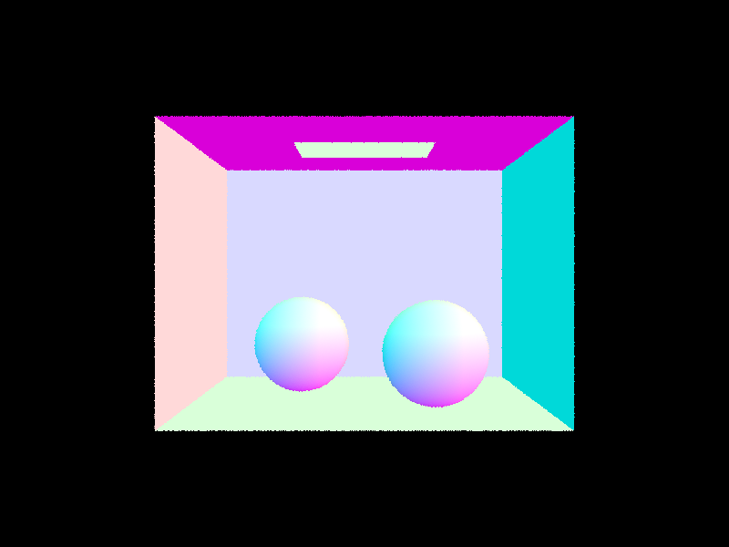 |
Part 2: Bounding Volume Hierarchy
In Part 2, I used BVH acceleration to significantly decrease rendering times for more complex files. I first implemented construct_bvh to construct the BVH. The algorithm I used begins by finding the bounding box of all objects from start to end (primitive pointers passed to the function). If the size of primitives in this range is less than or equal to the maximum leaf size, then this node can be a leaf node and all the function does is set start to start and set end to end. If the size is bigger, I have to split the primitives into left and right nodes and recurse. To choose the splitting axis, my algorithm uses the bounding box to determine the axis with the biggest range in values. Then, using sort and a lambda function which compares the values of two vectors along the splitting axis, I sort all primitives in the range start to end along this axis. Once the primitives are sorted, the splitting point is the median (i.e. term \(size / 2\)). The function then recurses, setting l and r of the current node to the results of their respective recursive calls.
Once I implemented the construction of the BVH, I then had to update BBox::intersect, BVHAccel::has_intersection, and BVHAccel::intersect with the relevant BVH algorithms provided in lecture. Now that these functions successfully traversed the BVH tree without performing any unnecessary intersection calculations, most files rendered in less than one second with debug shading.
Some large dae files that can only be rendered with BVH acceleration.
|
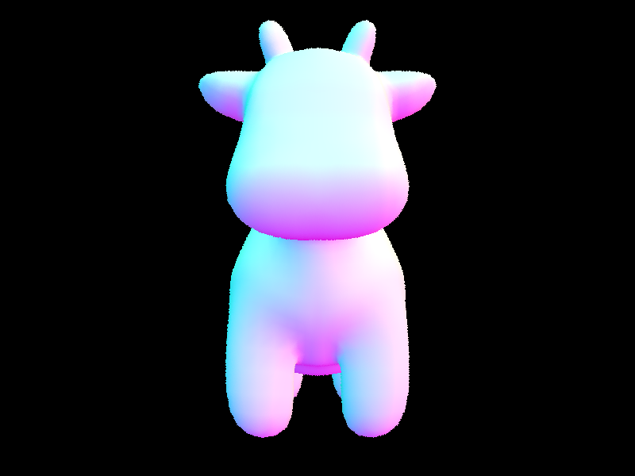 |
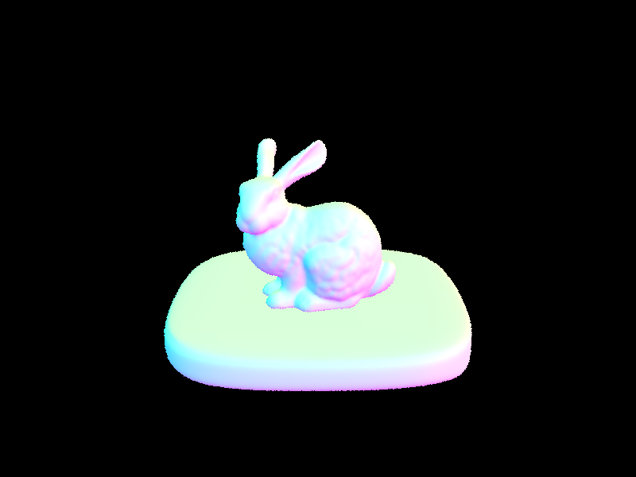 |
|
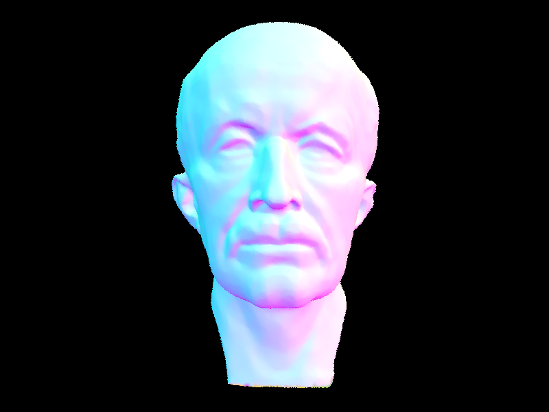 |
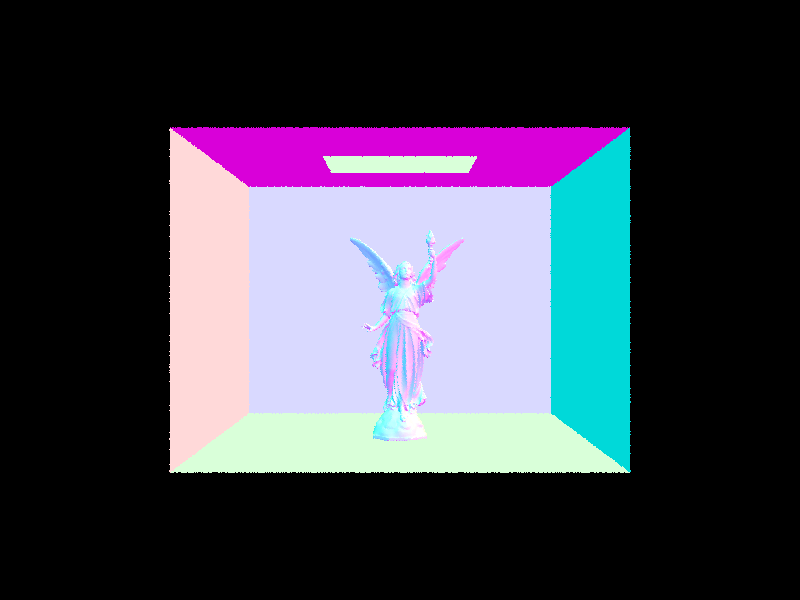 |
banana.dae rendered with and without BVH acceleration.
|
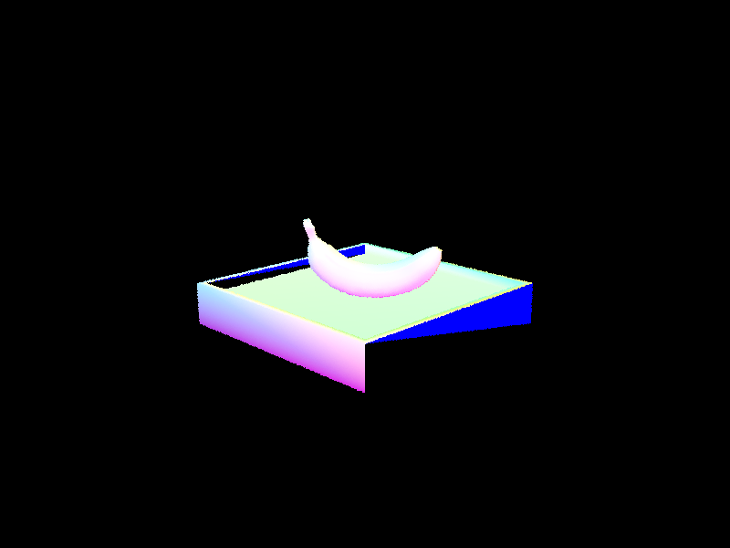 |

|
Above is banana.dae rendered without and with BVH acceleration. Evidently, the resulting renders are exactly the same, but the first render took 24.8733 seconds while the second only took 0.1616 seconds. banana.dae can be rendered without BVH acceleration in reasonable time, but BHV acceleration renders the image around 150 times faster. Admittedly, not all images have as significant a speedup, since banana.dae has a lot of empty space around the edges, meaning all rays in those directions will never be sampled due to missing the bounding box entirely.
Part 3: Direct Illumination
All previous images were rendered using the debug implementation of est_radiance_global_illumination. In Part 3, I updated this function to return the sum of zero and one bounce illumination using the BSDF class.
The first function I implemented was zero_bounce_radiance for zero-bounce illumination. This function was very straightforward as it only needed to return the illumination of the BSDF at the given intersection, which I did with BSDF::get_emission.
For one bounce sampling, I implemented one_bounce_radiance, which is actually a wrapper function for two possible direct illumination functions, one of which uses uniform hemisphere sampling while the other uses light sampling.
The first method I implemented was uniform hemisphere sampling with estimate_direct_lighting_hemisphere. Both lighting functions are passed a ray, traced backwards from the camera, and an intersection for that ray within the scene. These variables are used to define many additional variables within the function, including a Vector3D representing the hit point of the intersection in world space. Using this hit point and the provided hemisphere sampler in the PathTracer class, my function can create a sample ray. Note that the ray provided by the hemisphere sampler is in object space, so I have to convert it to world space using the o2w rotation matrix provided in the default implementation. The light along this sample ray is then calculated by performing an intersection test with the sample ray and the scene, where the illumination value of the new intersection's BSDF is the light along that ray.
This value is added to the cumulative light value of that point by inserting it to the reflection equation, which multiplies
it by f(wi -> wo) at the hit point (which I had already implemented for a uniform diffuse BSDF) and the cosine of the input angle and the surface normal, calculated as the dot product of their unit vectors, as well as normalizing by the probability density function and the number of samples. This ray sampling process is then repeated for a given number of samples to get the estimated lighting at that intersection.
The second direct lighting function I implemented was estimate_direct_lighting_importance, which performs light sampling. That is, instead of choosing a ray to trace uniformly from a hemisphere, we only sample rays in the direction of a light. To do this, my function uses a range-based for loop to iterate over the scene->lights vector, sampling the light hitting the given intersection for each light in the vector. If a light is a point light, only one sample is used to calculate the light at that point. If it's an area light, num_samples samples are taken. To sample a light, I use the provided SceneLight::sample_L to define a sample direction, a distance to the light, and the value of the PDF at that sample location. From these values, I check for shadows by defining a ray starting at the hit point and pointing in the sampled direction returned by sample_L and testing for any intersections between the hit point and light. If there is an intersection, then no light is added to the point. If there are no intersections, then the light reaches the point and I can add to the cumulative lighting Vector3D using the same reflection equation used in hemisphere sampling, this time using the PDF given by sample_L instead of a uniform hemisphere PDF. Implementing this function also adds functionality for point lights, which are missed entirely by uniform hemisphere sampling.
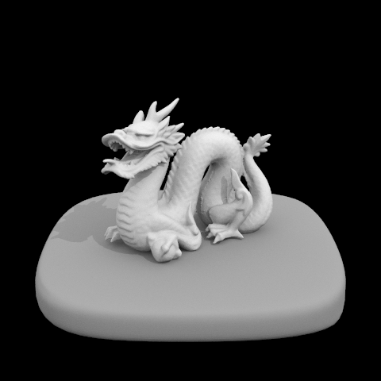
CBbunny.dae rendered at various sampling rates and light rays with hemisphere sampling (top row) and light sampling (bottom row).
|
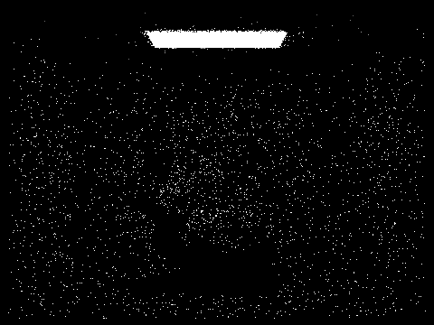 |
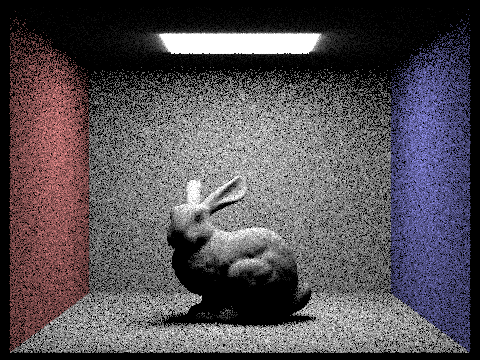 |
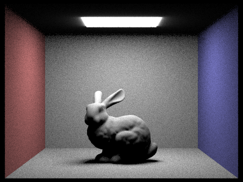 |
|
|
|
|
Lighting sampling gives noticeably better results for lower sample rates and light rays. This is because for hemisphere sampling, the likelihood of a sample ray hitting a non-illuminated point is moderately high for the average intersection. The less samples taken, the more likely it is that no illuminated samples will be taken for a given pixel, resulting in higher noise from darker pixels. Because lighting sampling looks in the direction of a light, samples are much more likely to be meaningful, leading to better results with less samples. As sample rates and light rays increase, the difference between the two methods decreases, as both hemisphere sampling and light sampling will begin to converge.
CBbunny.dae rendered with various light rays with 1 sample per pixel and light sampling.
|
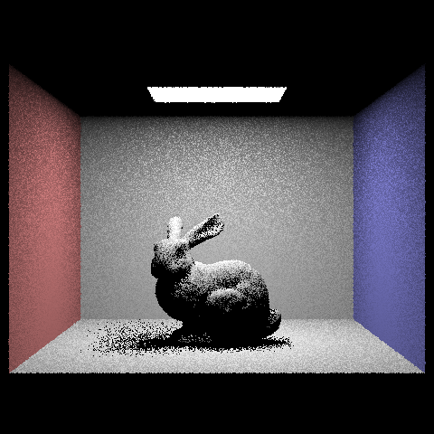 |
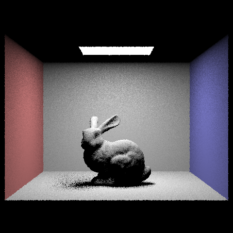 |
|
|
|
While light sampling gives comparatively better results than hemisphere sampling for less light rays and lower sample rates, there is still some noise that can be reduced by increasing light rays, specifically in areas of shadow. Looking at the above images, the difference between the well-lit areas in the image rendered with 16 light rays versus 64 light rays look almost identical. In fact, even going from 1 light ray to 64 there isn't a significant difference in the well-lit areas. On the other hand, there is a noticeable decrease in noise for areas in partial shadow, such as the edge of the bunny's shadow or the top of the back wall. This is because for areas only being hit partially by an area light, we run into the same issue we saw with hemisphere sampling where a single ray may determine that no light hits the surface when that isn't the case.
Part 4: Global Illumination
In Part 4, my task was to implement indirect lighting. That is, to trace a ray for more than only one bounce. To do this, I implemented the at_least_one_bounce_radiance function, which uses one_bounce_radiance and recursion to trace a ray for max_ray_depth bounces.
Since at_least_one_bounce_radiance is a recursive function, it needs a base case. Here, the base case is when max_ray_depth is reached. In order to keep track of a ray's depth, I set all initial sample rays' depth variables to max_ray_depth in the pixel sampling function where they're created and decrement this value for each recursive function call. For all calls to the function that aren't base cases, the function adds the value of one_bounce_radiance to the cumulative light vector (unless isAccumBounces is false, in which case the current radiance is only added when the current ray's depth parameter is 1) and creates a new ray to trace for the next bounce using BSDF::sample_f, which I implemented to use a provided cosine-weighted hemisphere sampler. This function sets both the sampled direction vector (in object space) and the value of the pdf of that sampled vector (to be used for normalization). After converting this sampled direction to world space, we can create a recursive sample ray starting at the current hit point. Before recursing, the function performs an intersection test with this ray, since at_least_one_bounce_radiance requires a ray and an intersection. If there is no intersection, then this sample ray doesn't hit anything and recursion stops. From here, the function recurses on the sampled ray and intersection, plugging this result into an evaluation of the reflection equation at the current hit point and with the previously calculated PDF.
Some images rendered with 5 light bounces and 1024 samples per pixel.
|
|
|
For the below images, the first is rendered with only direct illumination (i.e. one-bounce illumination), while the second is rendered with only indirect illumination (i.e. strictly-more-than-one-bounce illumination). The second image thus represents the light being added to the first when we trace rays more than once bounce.
CBbunny.dae rendered with only direct and only indirect lighting at 1024 samples per pixel.
|
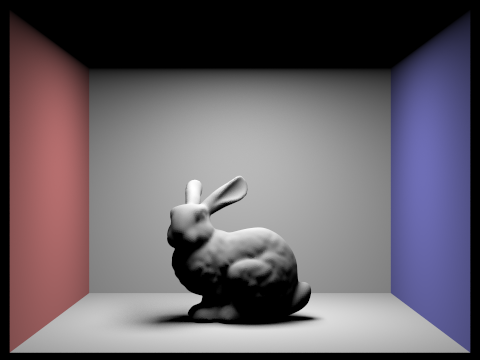 |
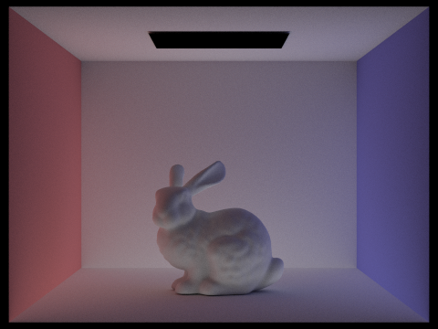 |
Below are renders of CBbunny.dae for maximum ray depth 0 to 5 with accumulation off (top row) and accumulation on (bottom row). Looking particularly at the 2nd and 3rd bounces of light, the renders without accumulation show how these bounces contribute light to areas almost entirely within shadow on the one-bounce render. Comparing this with the cumulative light renders at 2 and 3 bounces, the new images look much more natural, as it's very rare for there to be a visible area of complete darkness in a real-life lit room.
CBbunny.dae with various maximum ray bounces (no accumulation versus accumulation); 1024 samples per pixel.
|
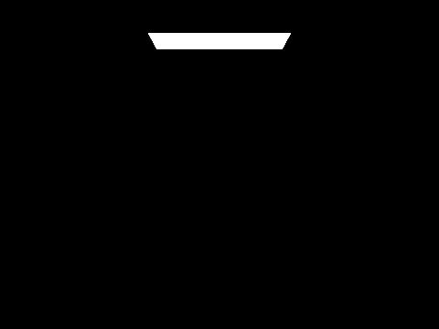 |
|
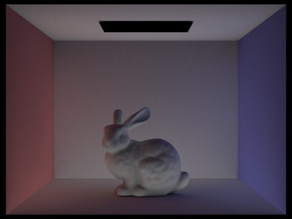 |
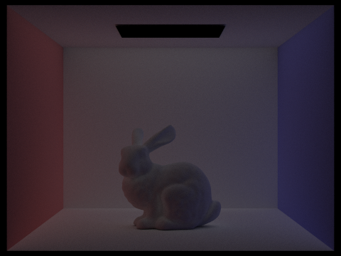 |
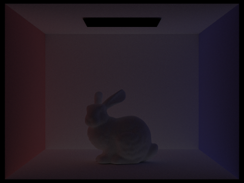 |
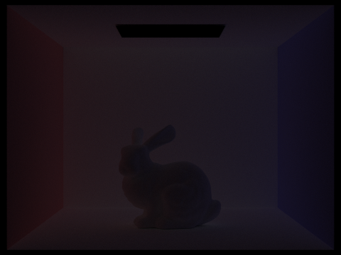 |
|
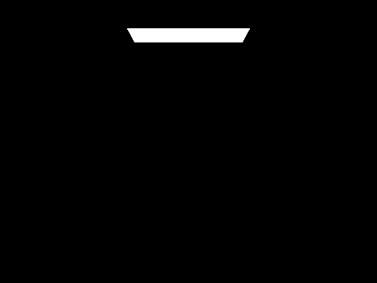 |
|
|
|
|
|
One problem with the above implementation of global illumination is that it's biased in favor of the first max_ray_depth bounces of light. To combat this, I implemented a sampling method called Russian Roulette. Russian Roulette works by terminating recursion with some arbitrary probability, which I set to \(0.35\) at the advice of the course staff. Now, max_ray_depth represents a maximum depth of recursion, but not necessarily the depth at which all rays are sampled. This allows us to sample with much higher m values, decreasing the bias of our calculated light values.
CBbunny.dae rendered with Russian Roulette and various maximum bounces; 1024 samples per pixel.
|
|
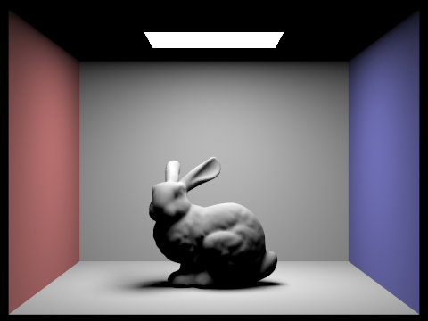 |
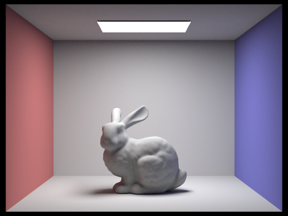 |
|
|
|
|
Finally, the below images of CBspheres_lambertian.dae are rendered with various sample per pixel rates and 4 light rays. Interestingly, as the sample rate increases, the image appears to get brighter. This is likely due to lower sample rates per pixel capturing comparatively more traced rays that intersected with nothing in the scene and exited recursion early, much like with uniform hemisphere sampling.
CBspheres_lambertian.dae rendered with 4 light rays and various sample per pixel rates.
|
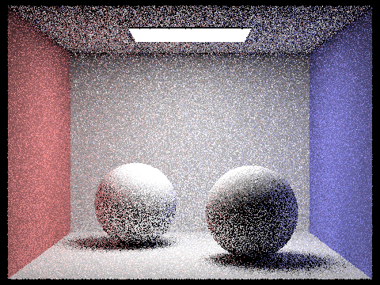 |
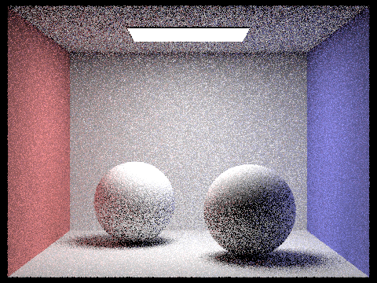 |
|
|
|
|
|
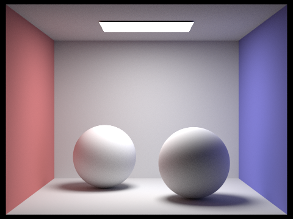 |
Part 5: Adaptive Sampling
For the final part of this assignment, I implemented adaptive sampling to reduce noise in my rendered images. Adaptive sampling works by sampling rays in a pixel until it can be said that the pixel has converged within a certain margin. Specifically, for this implementation, I used a value \(I\), given by \(1.96 * \frac{\sigma}{\sqrt{n}}\) where \(\sigma\) is the standard deviation of the pixel's illuminance samples and \(n\) is the number of samples so far. The requirement to say a pixel has converged is that \(I\) be less than the product of the average illuminance so far and a maximum tolerance (0.05 by default).
Since my raytrace_pixel function performed sampling with a for loop, I added adaptive sampling by breaking out of the loop if the pixel converged. Because testing for convergence requires calculating a new \(I\) and average value, it would be very expensive to test for convergence every time the loop repeated, so I used the provided samplesPerBatch variable to only perform this test every samplesPerBatch samples. This implementation of adaptive sampling allowed me to render the following images with a maximum sampling rate of 2048 samples per pixel (without crashing my computer!).
Adaptive sampling renders of CBbunny.dae and dragon.dae with maximum 2048 samples per pixel and their sample rate visualizations.
|
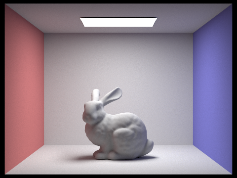 |
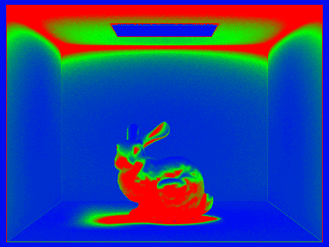 |
|
|
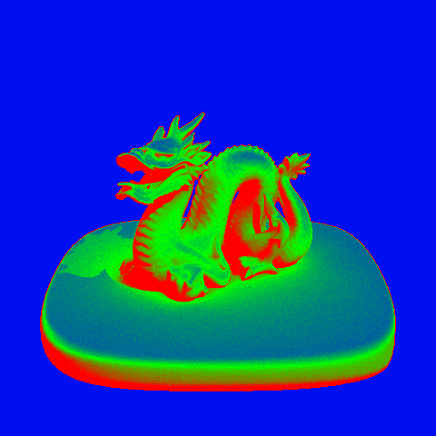 |